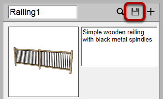
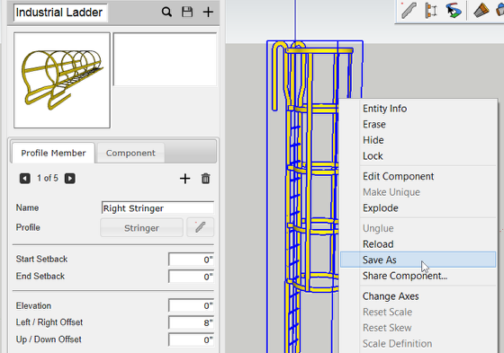

Click the 'Save Assembly' button to save the assembly.
A window will open asking where to save the Assembly.
The assembly will be saved as a SketchUp component (SKP file).

You can also save an Assembly by converting an Assembly to a Component and then using the right-click context menu to save the Component.
This is useful for creating specific prototype Assembly thumbnails for your library or before uploading to the 3D Warehouse.